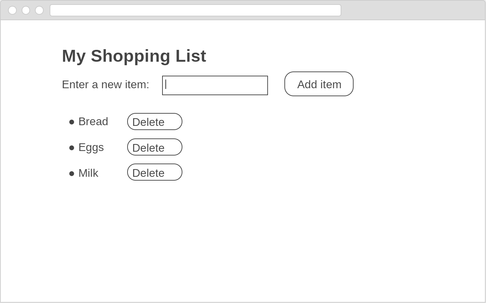
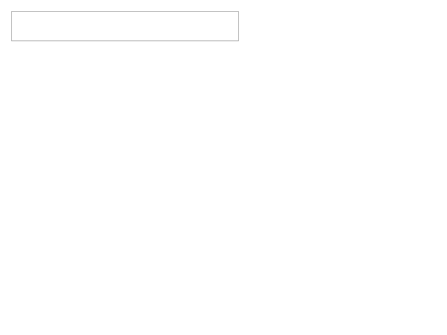
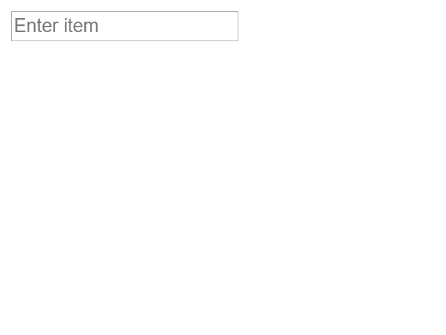
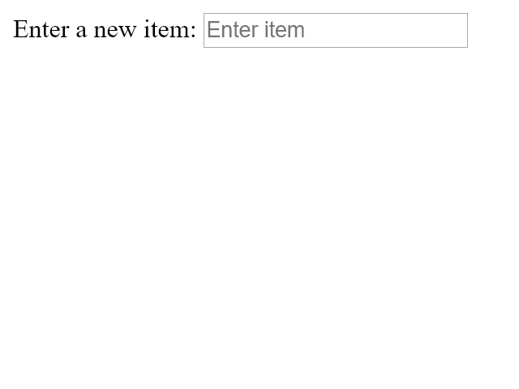
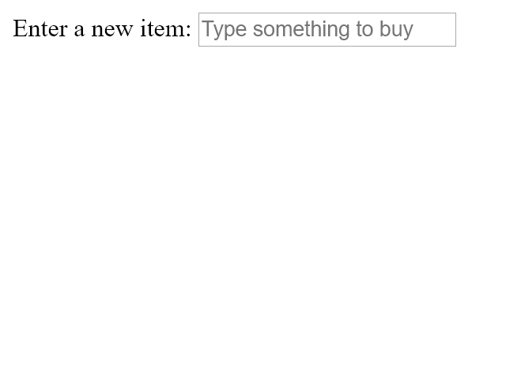
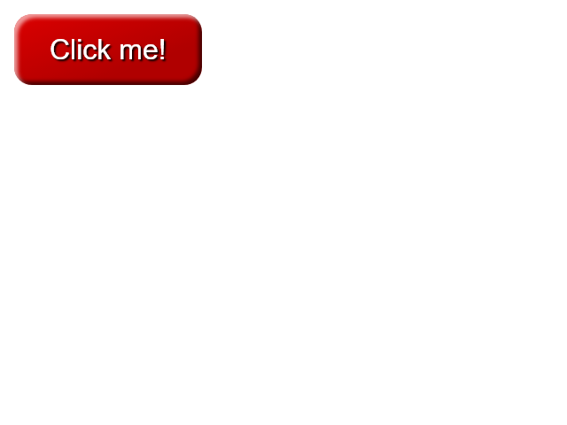
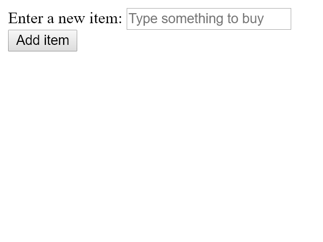

Powercoders Basel Coursework, DOM Shopping List Exercise
1 Building a shopping list
So far everything that we've been learning has been a bit abstract.
That's OK, but it's time to put the pieces together and start building something more concrete, where we can see definite progress towards an end-goal.
So we're going to build a web based shopping list, bit by bit.
Along the way we'll discover new things that we need to learn, and incorporate that in to what we build.
2 Features
- Box to enter an item
- Button to add the item to a list
- The list itself
- Each list item has a button to delete the item
To start with, our app is going to be very simple.
It's going to need a box where the user can type in the name of the item they want to add to the list. Add a button that the user can click in order to add the thing to the list.
It's going to need to be able to show the list of things the user has entered.
And each list item is going to need a button that allows the user to delete the thing from the list.
At the moment we're not going to worry too much about how it looks, so we're going to keep styling to a minimum. We want to get the core functionality working properly first.
3 Goal

I used a sketch tool to throw together a quick wireframe of what the app would look like initially, to make it a bit more concrete.
This is a very common approach – the UI designer might come to you with some sketches of different ideas, asking how difficult it is to build their idea.
[Wireframe is: https://wireframe.cc/Lfqgye]
4 What do / don't we know?
- We know
- Paragraphs, lists
- Listening for clicks
- Adding DOM nodes
Here's the things we've already covered. From that little demo, who can tell me things we're going to need to learn?
5 What do / don't we know?
- We know
- Paragraphs, lists
- Listening for clicks
- Adding DOM nodes
- We don't know
- Input boxes
- Buttons
- Removing DOM nodes
I think we're going to need to figure out
- input boxes
- buttons
- removing DOM nodes (so we can delete items from the list)
Everything else is stuff we've already done.
6 Set up
- Create a
poco/shoppingdirectory - Create
index.html- Heading "My shopping list"
- Empty unordered list
- Link to empty
style.cssandshopping.jsfiles
We'll set up the infrastructure for our project.
Create a new directory in your poco directory called shopping.
In there, create an index.html file. It should have a level 1 heading
with the text My shopping list, and an empty unordered list – the ul
element should be there, but it shouldn't have an listitems.
Make sure this HTML file links to two empty files, style.css and
shopping.hs.
7 Set up HTML
<!DOCTYPE html><html><head><title>Shopping</title><link rel="stylesheet" href="style.css" type="text/css"><script src="shopping.js"></script></head><body><h1>My shopping list</h1><!-- Controls to append new items go here --><!-- This is the shopping list --><ul><!-- List items will be added and removed here :-) --></ul></body></html>
Put this text in your HTML file, and make sure it works.
There's nothing special about this – it's just a skeleton file that contains all the normal structure for an HTML page.
I've added comments that indicate where the things we're going to need to learn are going to go, and we'll fill these in through the class.
Add all of these files to your repository and make a commit with a sensible commit message.
[Wait]
8 Input boxes
- MDN documentation: [mdn html input type=text]
- Questions:
- What element name and attributes should we use?
- What property contains the typed in value?
- How do you set a placeholder value?
- What is the
labelelement used for?
We're going to start by focusing on the UI things that we don't know.
To do that, I want you to look at the Mozilla Developer Network
pages for html input element. Specifically, the one where the
type attribute is set to text.
Have a read through that page and keep these questions in mind as you're reading, as I'll be asking questions in about 10 minutes…
[Wait]
8.1 Answers
8.1.1 What element name should be used?
<input type="text">
- The
inputelement - Specialised based on
typeattributetext,color,password, …

We use the input element, generally, to get input from the
user.
This element has a type attribute that is used to say exactly
what form the input should take. When we want to get a line of
text we set the type attribute to text, but there are others.
For example, if we set type to password then the text the user
typed in would automatically be hidden.
8.1.2 What property contains the typed in value?
<input type="text" id="an-input">
let el = document.getElementById("an-input");el.value;
The input element has a property called value. This property
contains whatever text is in the element.
8.1.3 How do you set a placeholder value?
<input type="text" placeholder="Enter item">
- Use the
placeholderattribute

Simply enough – there is a placeholder attribute. It's
value is used as the text to display in the input box if
the user hasn't entered anything.
8.1.4 What is the label element used for?
<label for="item">Enter a new item:</label><input type="text" id="item" placeholder="Enter item">
- Associates a caption with the input
- Clicking the label selects the input
- Screenreaders and accessibility
labelforattribute points toinputidattribute

The label element lets us associated a label with this specific
input element.
We could have used a p, but the label has a special attribute
that allows us to say exactly which input element the label is for.
If our input element has an id attribute, we set the label's
for attribute to the same value. Now, if the user clicks the
label the cursor will move in to the input element. And if they
have accessibility issues – maybe they're using a screenreader –
then their tools will be able do a better job.
8.2 Add label and input elements
11:<!-- Controls to append new items go here -->12:<div>13:<label for="item">Enter a new item:</label>14:<input type="text" id="item"15:placeholder="Type something to buy">16:</div>
- Edit
index.html - Add these elements to the page
- Don't forget to add and commit

So, now that we know all of that you can go ahead and add these elements to your page. Here's the HTML to use, just as a reminder.
When it's working don't forget to add and commit the change.
8.3 Checking that we can read the value
- Type something in the box
let el = document.getElementById('item');el.value;
- Do you see what you typed?
We already saw that the input widget has a value property that
contains whatever is entered in to the box.
We're going to need this information later.
So lets make sure that our understanding is correct.
Load the page in your browser, and open the developer tools.
Then type something – it doesn't matter what – in to input box.
Then, in the console, type this Javascript. All this does is
find the input element in the page and display its value
property.
If everything's working then you should see what you typed in to the box in the console.
[Wait]
8.4 Can we write the value?
el.value = 'hello'; // <-- What happens?
Try this out in the console. What happens?
[Wait]
That's cool – we can change the value in the box by writing to the property.
This is just like changing the value of the className property
to change the class attribute value that we did earlier.
9 Buttons
- MDN documentation: [mdn html button]
- Questions:
- What element name and attributes should we use?
- Can we make buttons look pretty?
Now we know how to provide somewhere for the user to enter information we need to give them a button that they can click which will add the entered item to the shopping list.
Again, I want you to look at the MDN pages for buttons. Do that search, and read the page keeping these questions in mind. I'll be asking questions again in about 10 minutes…
[Wait]
9.1 Answers
9.1.1 What element name should be used?
<button>Click me!</button>
- The
buttonelement - At the moment we don't need attributes
Creating buttons is pretty easy. We just use the button element,
without any special attributes.
The content of the element becomes the text shown on the button.
9.1.2 Can we make the buttons look pretty?
<buttonstyle="border: 0;line-height: 2.5;padding: 0 20px;font-size: 1rem;text-align: center;color: #fff;text-shadow: 1px 1px 1px #000;border-radius: 10px;background-color: rgba(220, 0, 0, 1);background-image: linear-gradient(to top left,rgba(0, 0, 0, .2),rgba(0, 0, 0, .2) 30%,rgba(0, 0, 0, 0));box-shadow: inset 2px 2px 3px rgba(255, 255, 255, .6),inset -2px -2px 3px rgba(0, 0, 0, .6);text-shadow: 1px 1px 1px #000;">Click me!</button>
styleattribute is only for demo purposes, do not do this

Yes we can. There are lots of opportunities for styling buttons.
This is a somewhat extreme example.
9.2 Add a button element to your page
- Add a
buttonelement after theinputelement- Inside the
div
- Inside the
- Make sure it shows up
- Add and commit
So lets add that button element to the page. Place it after
the input element, and inside the div.
The text on the button can be anything you want.
Once you've done that and it's showing up, add and commit.
[Wait]
9.2.1 Solution: Add a button element
11:<!-- Controls to append new items go here -->12:<div>13:<label for="item">Enter a new item:</label>14:<input type="text" id="item"15:placeholder="Type something to buy">16:<button>Add item</button>17:</div>

So lets add that button element to the page. Place it after
the input element, and inside the div.
The text on the button can be anything you want.
Once you've done that and it's showing up, add and commit.
[Wait]
10 Widgets / controls
The general term for things like the input box, buttons, and other things that you can add to forms – like checkboxes, drop-down lists, radio buttons, and more – is a widget. The term control is also used.
So you might hear me talk about the input widget or the input control, or the button widget.
You'll see these terms come up a lot in documentation as well.
11 Responding to button clicks
- Use an event listener, exactly as before
document.addEventListener('DOMContentLoaded', function(event) {document.querySelector('button').addEventListener('click', function(event) {console.log('The button was clicked');});});
Our button is on the page, but it's not doing anything yet.
We need to write some Javascript that will run when the button is clicked that will do something.
To listen for button clicks we use an event listener exactly as we've done in the past.
I know querySelector here is new. We're going to talk about that
in a moment.
For now, make sure that index.html is loaded, open the console,
type this, and click the button a few times to make sure it works.
[Wait]
Does everyone see how this works? Did you get the message in the console when the button was clicked?
11.0.1 querySelector()
document.querySelector('button').addEventListener('click', function(event) {console.log('The button was clicked');});
- Finds the first element that matches the CSS selector string
- Much more flexible than
getElementById()
So far we've been using getElementById to find elements based on their
id attribute.
Here I'm using the querySelector method. This method has a single
parameter which is a string which should look like a CSS selector.
Remember, the selector is the part in a CSS rule that's before the curly-brackets and all the style rules.
If more than one element matches the selector only the first matching element is returned.
11.0.2 querySelector() examples
<p id="first">...</p><h1 class="warning">...</h1><p class="warning">...</p><ul><li>First li</li><li>Second li</li></li>
document.querySelector('#first');// <p id="first">// Identical to getElementById('first');document.querySelector('.warning');// <h1 class="warning">document.querySelector('p.warning');// <p class="warning">document.querySelector('ul li:nth-of-type(2)').innerText;// "Second li"document.querySelector('p');// <p id="first">// Finds the first matching element
Here are some examples.
On the left we have some HTML. On the right, some calls to
querySelector().
In the Javascript, the call in line 1 returns the first p element,
also on line 1 of the HTML. This is because the p element has
an id of "first", and remember that the # sign is how you specify
an ID in CSS.
The call on line 5 returns the h1 element. Although there are two
elements – the h1 and the p that have the warning class,
querySelector returns the first one.
The call on line 8 specifically finds the p element because the
selector is more specific.
And on line 11 this selector finds the second li element of the
first ul element. And then retrieve's its innerText property.
12 Log the value in the input box
- Modify the click listener
- Retrieve the input widget's value
- Log it using
console.log
We can use console.log to verify that we've got the value
correctly before moving on to the next part of the problem.
12.1 Solution: Button click listener
// With a variable.document.addEventListener('DOMContentLoaded', function(event) {document.querySelector('button').addEventListener('click', function(event) {let inputBox = document.getElementById('item');console.log(inputBox.value);});});
// With chaining.document.addEventListener('DOMContentLoaded', function(event) {document.querySelector('button').addEventListener('click', function(event) {console.log(document.getElementById('item').value);});});
13 Adding list items
<ul><!-- List items go here --></ul>
<li><span>Eggs</span> <button>Delete</button></li>
Now that we can do something when the user clicks the button, and we can see what text they added, we need to figure out how we're going to add an item to the list.
In our HTML file our list starts out like the example at the top.
It's just the ul element with no children.
What we want is to create a new entry in the list for each item. Each entry is going to need to contain the text that the user typed in, and a button to delete the item from the list.
In other words, it's going to look like the HTML at the bottom. Except "Eggs" is going to be replaced by whatever the user typed in.
This means we need to write a function that can take whatever's in the
input, create a new li, create a span, set the text of the
span, add a button.
Before we do that, let's make sure that our understanding of what the DOM tree for this is going to look like is correct.
13.1 List item graph
<li><span>Eggs</span> <button>Delete</button></li>
- Draw the DOM tree for this HTML
This is what we're going to add to the ul element every time
the button is clicked.
Go ahead and draw out the tree for these elements.
[Wait]
13.1.1 Solution: List item graph
<li><span>Eggs</span> <button>Delete</button></li>
Did everybody's tree look like this?
[Wait]
For anyone's that didn't.
We start with the li element – that's the first node.
We see that this has a child element called span, so we add
that to the tree.
Then we see that it has some content, so we add that as well.
Then the span ends, and a new button element starts. This is
also a child of the li element. And that has some text content
too, so we add that as its own node.
13.2 Exercise: Write a function that creates this tree
function createNewListItem(itemName) {// Fill this in}
13.3 Exercise (hint): Write a function that creates this tree
function createNewListItem(itemName) {// Create an li node// Create a span node// Set the span's .innerText property// Create a button node// Set the button's .innerText property// Append the span to the li node// Append the button node to the li node// Return the li node}
13.4 Solution: Write a function that creates this tree
function createNewListItem(itemName) {let listItem = document.createElement('li');let listText = document.createElement('span');listText.textContent = itemName;let deleteButton = document.createElement('button');deleteButton.textContent = 'Delete';listItem.appendChild(listText);listItem.appendChild(deleteButton);return listItem;}
Here's one possible solution.
There are 5 sections to this code:
- Creating the
li - Creating and populating the
span - Creating and populating the
button - Appending children to the
li - Returning the value.
Steps 1, 2, and 3 can happen in any order.
I'm going to show you some variations of this function.
13.5 Solution: Write a function that creates this tree
function createNewListItem(itemName) {let listItem = document.createElement('li');let listText = document.createElement('span');let deleteButton = document.createElement('button');listText.textContent = itemName;deleteButton.textContent = 'Delete';listItem.appendChild(listText);listItem.appendChild(deleteButton);return listItem;}
This has exactly the same effect as the previous function. But here the nodes are created before being modified. This is absoutely fine.
My personal preference is to not do this – I generally prefer it if a variable is declared as close to where it will be used as possible, but different people have different opinions about this.
13.6 Solution: Create and append
function createNewListItem(itemName) {let listItem = document.createElement('li');let listText = document.createElement('span');listText.textContent = itemName;listItem.appendChild(listText);let deleteButton = document.createElement('button');deleteButton.textContent = 'Delete';listItem.appendChild(deleteButton);return listItem;}
This also has the same effect, but we append the nodes to the list item as soon as we're done with them.
This is also a perfectly fine way to do things.
14 Adding list items when the button is clicked
This is our current click listener
document.addEventListener('DOMContentLoaded', function(event) {document.querySelector('button').addEventListener('click', function(event) {let inputBox = document.getElementById('item');console.log(inputBox.value);});});
- Call
createNewListItemto generate thelinode - Find the
ulelement and useappendChildto add thelinode
This is the click listener that we wrote earlier. Yours might have slightly different variable names, but it should work – when the button is clicked it should log whatever is in the input widget.
Modify this click listener so that it calls createNewListItem
with the input widget's value to create the new li element.
Then find the ul element and use appendChild to add the li node.
[Wait for everyone to do this]
14.0.1 Solution: Adding list items when the button is clicked
// Variablesdocument.addEventListener('DOMContentLoaded', function(event) {document.querySelector('button').addEventListener('click', function(event) {let inputBox = document.getElementById('item');let li = createNewListItem(inputBox.value);document.querySelector('ul').appendChild(li);});});
// Chainingdocument.addEventListener('DOMContentLoaded', function(event) {document.querySelector('button').addEventListener('click', function(event) {document.querySelector('ul').appendChild(createNewListItem(document.getElementById('item').value));});});
Here's what one solution looks like.
We call createNewListItem(), passing it inputBox.value, so it
receives whatever text the user typed in.
This returns an li elemnt, which we save in the li variable.
On the next line we find the ul element and append our new li
element to the end.
[Questions?]
This alternative version here does the same thing, but chains things together instead of using intermediate variables.
15 The Delete button
function createNewListItem(itemName) {let listItem = document.createElement('li');let listText = document.createElement('span');listText.textContent = itemName;let deleteButton = document.createElement('button');deleteButton.textContent = 'Delete';listItem.appendChild(listText);listItem.appendChild(deleteButton);return listItem;}
Now that adding items to the list works we need to figure out how we're going to delete them.
Deleting a list item is the same thing as deleting (or removing) it from the DOM tree.
This is the code that I wrote that creates and returns a new list item. We talked about this code a few slides back – your code might look slightly different, but the end result is the same.
The important bit for the delete button is finding the place in the code where the button is created. In my code that's right here, lines 7 and 8.
Go ahead and find that spot in your code.
Because we're going to make a change right there.
Let me know when you've found your equivalent code.
15.1 Exercise: Checking we can detect the click
function createNewListItem(itemName) {let listItem = document.createElement('li');let listText = document.createElement('span');listText.textContent = itemName;let deleteButton = document.createElement('button');deleteButton.textContent = 'Delete';// Add a click handler that logs the click here// ...listItem.appendChild(listText);listItem.appendChild(deleteButton);return listItem;}
As always, let's make sure we can detect the click before we do anything more complicated.
We're always trying to make the simplest change that can work, and then build upon it.
So, change your createNewListItem function and add a click listener
after the delete button has been created.
This is my code, so I'd put the new code where the comment is. Your code might create the elements in a slightly different order, but as long as you create the handler after the button is created you'll be OK.
This click listener is going to be just like the one we made for the
"Add Item" button a while back – it does has to listen for the
click event and use console.log to send a message to the console.
[Wait]
15.2 Solution: Checking we can detect the click
function createNewListItem(itemName) {let listItem = document.createElement('li');let listText = document.createElement('span');listText.textContent = itemName;let deleteButton = document.createElement('button');deleteButton.textContent = 'Delete';deleteButton.addEventListener('click', function(event) {console.log('Delete button clicked');});listItem.appendChild(listText);listItem.appendChild(deleteButton);return listItem;}
Here's my solution. There's nothing special here that we haven't done before.
I add an event listener for the click event to the delete
button, and when it's clicked I used console.log to confirm
that the listener was working.
That's the new code on lines 10, 11, and 12. Everything else is the same.
15.3 Removing DOM nodes
Now that we know we can detect the click and run an event listener we need to find out how we delete the current list item from the tree.
For that we can use the documentation again. Try one of these searches in Google, and read the documentation that comes up.
See if you can figure out what one line of code we need to write in the click event listener to delete the listitem when the button is clicked.
[Wait]
15.4 Solution: Removing DOM nodes
element.remove();
The general way to remove an element from the DOM tree is to
call its remove() method. If you do this then the element,
and anything that it contains, will be deleted.
15.4.1 remove() and the DOM
<ul><li><span>Eggs</span> <button>Delete</button></li><li><span>Milk</span> <button>Delete</button></li><li><span>Bread</span> <button>Delete</button></li></ul>
Imagine our list has three list items in it, for "Eggs", "Milk", and "Bread", like this.
15.4.2 remove() and the DOM
This is what the DOM tree for that looks like.
Does this make sense to everyone so far?
[Wait]
15.4.3 Finding the second list item
let secondLi = document.querySelector('li:nth-child(2)');
15.4.4 Removing the second list item
let secondLi = document.querySelector('li:nth-child(2)');secondLi.remove();
15.4.5 Exercise: Remove the listitem when the delete button is clicked
function createNewListItem(itemName) {let listItem = document.createElement('li');let listText = document.createElement('span');listText.textContent = itemName;let deleteButton = document.createElement('button');deleteButton.textContent = 'Delete';deleteButton.addEventListener('click', function(event) {console.log('Delete button clicked');});listItem.appendChild(listText);listItem.appendChild(deleteButton);return listItem;}
15.4.6 Solution: Remove the listitem when the delete button is clicked
function createNewListItem(itemName) {let listItem = document.createElement('li');let listText = document.createElement('span');listText.textContent = itemName;let deleteButton = document.createElement('button');deleteButton.textContent = 'Delete';deleteButton.addEventListener('click', function(event) {listItem.remove();});listItem.appendChild(listText);listItem.appendChild(deleteButton);return listItem;}
Here we simply call the remove method on the listItem.
16 Recap: What have we learned?
- Widgets
input- Different types exist,
type=... - Retrieving the value
- Different types exist,
button- Reacting to clicks
label
document.querySelector('...')- More flexible way to select elements
element.remove()- To remove elements from the DOM
17 Play
- Play around with the shopping list
- Identify things we could change to make it easier for users
18 UX followup work
- Press
ENTERto add an item - Clear the input widget after adding an item
- Setting the input focus
- Prevent empty items from being added
So, there's good news and bad news.
The good news is that our CEO is very happy with our work, and thinks that our shopping list app could make a fortune.
The bad news is that we've done some user experience tests with early adopters, and they've identified a number of things that they'd like us to change about the app.
They are:
- At the moment they have to click the button to add an item. They'd like to press the Enter key as well
- After they've added an item it's still in the input widget. So they have to delete whatever they typed in last before entering a new item
- Some of them use the keyboard a lot, and they keep having to use the mouse to click in the input box before they can type there
- It's really easy to add empty items to the list
Lets get on and fix those problems.
19 Press ENTER to add an item
- Need to click the button to add the item
- Natural to press ENTER to add to the list
- How?
19.1 MDN key events
- Search MDN for information about keyboard events
- Look for information about keys being released
Given the events we've been dealing with so far, you're probably not surprised to know that events also fire when the user presses and releases keys.
Search MDN for information about keyboard events, look particularly for anything that can tell you when a key has been released by the user.
[Wait]
What did you find?
19.2 keyup event properties
document.addEventListener('DOMContentLoaded', function(event) {...});
So far our event listeners have only been interested in whether or not the event occurred. There's nothing else about the event that's interesting to them.
Things are different for the keyup event. Here, we don't just
want to know that a key was released, we want to know which key
was released – specifically, was it the ENTER key?
All of our event listeners have taken an event parameter, but
we haven't used it.
This parameter is where the browser tells us extra things about the event so that we can make decisions about it.
The documentation for each event tells us what properties the event parameter has for this type of event, and what they mean.
Looking through these there are a number of things we haven't covered yet, including event bubbling and cancellation. Don't worry about those.
I'm more interested in these ones here – from char on down.
These all sound like they'll tell us more information about
the key that was released.
The key property looks interesting, based on its description.
Reading that, it sounds like regular keys will have a key
value like the key itself, so if you press a then the value
will the string a, b is b, and so on.
This note here about Key values is also interesting. This
strongly suggests that special keys, like Enter, are
represented specially, so lets look at that doc for more
information.
So this document has lots of tables. It looks like the first
column is the value of that key property, and then there are
more details.
Looking at the scroll bar on the right tells me that this is
a huge document, so I'm going to just search for Enter and
see if anything turns up.
[Search for Enter]
And straightaway, we can see that if the user presses the
Enter key we should get a key value of the string Enter. I
can tell that it's a string because it's surrounded by double
quotes.
19.3 Exercise: Listening for keyup and inspecting event.key
document.addEventListener('DOMContentLoaded', function(event) {document.querySelector('button').addEventListener('click', function(event) {// ...});// Add code here that listen for 'keyup' on the 'input' element// and logs the event.key property.});
Lets go and check that our understanding is correct, by writing an
input event listener that listens for keyup events on the input
widget and logs the results.
Do this, and let me know when it's done, and you have confirmed which string is used to repesent the ENTER key.
[Wait]
19.4 Solution: Listening for keyup and inspecting event.key
document.addEventListener('DOMContentLoaded', function(event) {document.querySelector('button').addEventListener('click', function(event) {// ...});document.querySelector('input').addEventListener('keyup', function(event) {console.log(event.key);});});
Here's a solution – the new event listener here simply logs the
key property of the event argument so we can take a look at it.
What special string is used if the user presses the ENTER key?
[Wait]
Are there strings for any other special keys?
[Wait]
Control, Shift, Alt, AltGraph, CapsLock
19.5 How do we use this?
Now we know that we can tell if the user pressed the ENTER key in the input widget.
At the moment we're just logging the key that was pressed. We need to be able to run some code only if the key that was pressed is ENTER.
How do we do that?
19.6 Making a decision: using if statements
if (expression) {// Code that only runs if 'expression' is true//// We call this the "body" of the "if" block.}
The answer to that is an if statement.
We haven't seen these yet.
Remember when we first talked about the flow of control. Initially control in the program flows down, line by line by line.
Then we introduced functions, which allows the flow to jump to a different function, run the code that's in that function, and then jump back to carry on where it left off.
if statements change the flow so that some code – the code inside
the if block – runs only if the expression inside the parentheses
is true.
Notice how the if block uses curly brackets – just like functions –
to enclose the code that might run.
19.7 True and false values in Javascript?
- False values
falseundefinednullNaN0(number zero)''(empty string)
- True values
- Everything else
Looked a little bit at these earlier in the week.
TODO: Look back to when that was and what was discussed
On the left hand side is every value that Javascript considers to be
false. If the result of an expression evalutes to false and the
expression is used in an if condition, the body of the if will not
run.
19.8 Comparison operators, numbers
let a = 10;let b = 20;a === b; // false, === means "is equal to?"a !== b; // true, !== means "is not equal to?"a < b; // true, < means "is less than?"a > b; // false, > means "is greater than?"a <= b; // true, <= means "is less than or equal to?"a >= b; // false, >= means "is greater than or equal to?"
Javascript supports numerous operators that are used to compare two or more values.
Here are the six most common, and what they return.
Try all of these in the console, and make sure you get the same result.
[Wait]
19.9 Comparison operators, strings
let c = 'This is a string';let d = 'This is also a string';c === d; // false, === means "is equal to?"c !== d; // true, !== means "is not equal to?"c < d; // true, < means "is less than?"c > d; // false, > means "is greater than?"c <= d; // true, <= means "is less than or equal to?"c >= d; // false, >= means "is greater than or equal to?"
You can use these same operators to compare strings. Try these out in the console.
[Wait]
19.10 What does < and > mean for strings?
- Dictionary order
// let c = 'This is a string';// let d = 'This is also a string';c < d; // truelet e = 'Another string example';let f = 'Another example string';e < f; // false, 'e' comes before 's'
Strings are compared in dictionary order. Imagine that you had to put the string in a dictionary. Any word, or string that would occur first in the dictionary is less than any word or string that would appear after.
Here, strings e and f are different from the first letter of the
second word. Since the e in example is before the s in string,
string f is less then string e, and the comparison is false.
19.11 Expressions can mix variables and values
// let a = 10;// let c = 'This is a string';a > 5; // truea <= 10; // truec === 'This is a string'; // true
Of course expressions can mix variables and values. Here are some examples of that.
Try these out too.
[Wait]
19.12 Warning: == and !=
- Do not use
==and!=
let g = 10;let h = '10';g === h; // false, comparing numbers and stringsg == h; // true, Javascript converts h to a number first (DANGER)g + 1 == h + 1; // false (DANGER)
Javascript has two other equality operators, the double-equals, and the bang-equals.
You will probably see them in older code.
You should not use them.
Rembeer how values have types – a number, or a string say. Triple-equals returns true only if the values are the same and the types are the same. In this first comparison here it returns false because the types don't match.
Single-equals and bang-equals don't do this. If the types don't match it tries to convert them. So on this line here the result is true, because it convers the string one-zero to the number ten first, and that is equal.
This can lead to very strange behaviour. For example, if you have two values that are identical according to double-equals, and add 1 to both values you think that the results would be the same.
But they're not, because the plus-sign in Javascript does different things depending on whether the value is a number or a string.
This can lead to subtle bugs, so always use triple-equals and bang-equals-equals.
19.13 Reminder: if statement syntax
if (expression) {// Code that only runs if 'expression' is true//// We call this the "body" of the "if" block.}
So as a quick reminder after all that, this is the structure of an
if statement.
We have the if keyword, an expression in parentheses, and then the
code to run if the expression is true inside curly brackets.
19.14 Exercise: Only log the key if it's Enter
document.addEventListener('DOMContentLoaded', function(event) {document.querySelector('button').addEventListener('click', function(event) {// ...});document.querySelector('input').addEventListener('keyup', function(event) {console.log(event.key);});});
Here's our current logging code.
Change this so that the key is only logged if it's Enter
[Wait]
19.14.1 Exercise (hint): Only log the key if it's Enter
document.addEventListener('DOMContentLoaded', function(event) {document.querySelector('button').addEventListener('click', function(event) {// ...});document.querySelector('input').addEventListener('keyup', function(event) {if (/* What goes here? */) {console.log(event.key);}});});
19.15 Solution: Only log the key if it's Enter
document.addEventListener('DOMContentLoaded', function(event) {document.querySelector('button').addEventListener('click', function(event) {// ...});document.querySelector('input').addEventListener('keyup', function(event) {if (event.key === 'Enter') {console.log(event.key);}});});
If this is working then you should see that the log message only appears when you press the Enter key.
[Demo this in WebStorm to show the control flow changing]
19.16 Exercise: Adding the item if the ENTER key is released
document.addEventListener('DOMContentLoaded', function(event) {document.querySelector('button').addEventListener('click', function(event) {// ...});document.querySelector('input').addEventListener('keyup', function(event) {if (event.key === 'Enter') {console.log(event.key);}});});
So, back to our code. And the last thing we need to do here is to replace the logging code with code that creates the new list item and appends it to the list, exactly as the code for clicking the button does.
Off you go.
[Wait]
19.17 Solution: Adding the item if the ENTER key is released
document.addEventListener('DOMContentLoaded', function(event) {document.querySelector('button').addEventListener('click', function(event) {// ...});document.querySelector('input').addEventListener('keyup', function(event) {if (event.key === 'Enter') {let inputBox = document.getElementById('item');let li = createNewListItem(inputBox.value);document.querySelector('ul').appendChild(li);}});});
And here's that final part of the function.
We listen for the keyup event, and check to see if it's the Enter key here.
If it is then this block will run, and this is the same code that we used to create a new list item and add it to the list.
19.18 Recap: What have we learned?
- Events fire for keypresses
keyupkeydownkeypress
- The
eventparameter- Holds event-specific information
- MDN documentation has info
- Decisions with
if- Expressions, true/false values
- Different comparison operators
- Don't use
==and!=
19.19 Add and commit the changes
20 Clear the input widget after adding an item
20.1 Problems
- The user has to delete the text in the input widget
- And if they double-click, or press
Entertwice then the item is added twice - Fix this by clearing the
inputwidget after appending the list item - We've already seen how
20.2 Exercise: Clear the input widget
document.addEventListener('DOMContentLoaded', function(event) {document.querySelector('button').addEventListener('click', function(event) {// Existing code that adds to the list// <-- new code goes here});document.querySelector('input').addEventListener('keyup', function(event) {// Existing code that adds to the list// <-- new code goes here});});
20.3 Solution: Clear the input widget
document.addEventListener('DOMContentLoaded', function(event) {document.querySelector('button').addEventListener('click', function(event) {// Existing code that adds to the listinputBox.value = '';});document.querySelector('input').addEventListener('keyup', function(event) {// Existing code that adds to the listinputBox.value = '';});});
20.4 Add and commit the changes
21 Setting the input focus
21.1 Focus means "Where do your keystrokes go?"
On a form with multiple controls, like this (an input widget and a button), where do you keystrokes go?
For example, you can press SPACE to click the button. Or you can press SPACE to put a space in the input widget. How does the system decide what happens when SPACE is pressed?
We say that there is the focus. Only one widget at a time has the focus. It's where your clicks and keystrokes go.
21.2 The focus moves with TAB key
Click on the input widget.
You should see a blue highlight around it – the colour might change depending on your system.
This highlight means that the input widget has the focus.
Press the TAB key. The focus should have shifted to the button.
[Wait]
Press the TAB key again. Where has the focus gone now?
[Wait]
21.3 Javascript has methods to set the focus
Javascript provides methods to set the focus to a given element.
Do this search to read up on how to do it.
21.4 Exercise: Give the input widget the focus after adding an item
- No code hint this time. See how you do!
[Wait]
21.5 Solution: Give the input widget the focus
document.addEventListener('DOMContentLoaded', function(event) {document.querySelector('button').addEventListener('click', function(event) {// Existing code that adds to the list and clears the box.inputBox.focus();});document.querySelector('input').addEventListener('keyup', function(event) {// Existing code that adds to the list});let inputBox = document.getElementById('item');inputBox.focus();});
Did your changes look like this?
[Wait]
We had to add this in two places.
The first is in the event listener for the button click. When the user clicks the button the focus moves to the button, so we have to send it back to the input widget.
We don't have to do it when the user presses ENTER in the input widget, because the focus doesn't move at that point – it stays in the widget.
I found that when the page is loaded nothing has the focus. So I've explicitly set the focus to the input widget when the DOM content had loaded as well.
[Questions? Any problems?]
21.6 Add and commit the changes
22 A quick refactoring
document.addEventListener('DOMContentLoaded', function(event) {document.querySelector('button').addEventListener('click', function(event) {let inputBox = document.getElementById('item');document.querySelector('ul').appendChild(createNewListItem(inputBox.value));inputBox.value = '';inputBox.focus();});document.querySelector('input').addEventListener('keyup', function(event) {let inputBox = document.getElementById('item');if (event.key === 'Enter') {document.querySelector('ul').appendChild(createNewListItem(inputBox.value));inputBox.value = '';}});let inputBox = document.getElementById('item');inputBox.focus();});
This is my code at this point (just for the event listeners, this isn't the code that creates the list item).
Your code should look similar. I've used method chaining, you might not have, but the general structure of the code should be the same.
I'm going to do a quick refactoring of this.
I don't like that the input widget has to be found three different times. It clutters up the code a bit, and makes it a little harder to focus on what's going on.
And the shopping list also has to found twice, so lets remove that duplication.
It also gives me the chance to explain scope to you, so let's do that.
22.1 Refactored: variables at higher scopes
1:document.addEventListener('DOMContentLoaded', function (event) {2:let inputBox = document.getElementById('item');3:let shoppingList = document.querySelector('ul');4:5:document.querySelector('button').addEventListener('click', function (event) {6:shoppingList.appendChild(createNewListItem(inputBox.value));7:inputBox.value = '';8:inputBox.focus();9:});10:11:inputBox.addEventListener('keyup', function (event) {12:if (event.key === 'Enter') {13:shoppingList.appendChild(createNewListItem(inputBox.value));14:inputBox.value = '';15:}16:});17:18:inputBox.focus();19:});
This is the refactored code.
On lines two and three I declare and initialise two variables, one for the inputBox, one for the shopping list.
Then I use these throughout the rest of function.
So lets talk about scope for a second.
When we declare variables in Javascript we say that they have a scope (you might also hear the word visibility used).
Very roughly, Javascript uses these curly brackets to indicate where scopes start and end.
And because we can have curly bracket sections inside curly bracket sections, we say that they are nested inside each other.
This is very similar to the way that HTML elements are nested inside one another.
You can think of this as creating different levels of scope. Each new curly bracket pair in the nested set increases the scope level by one.
The rule is that a variable is visible in its scope, and any scopes that are nested inside it.
I'll use this code to explain, and then we'll do a couple more examples.
At the very top level is the outermost, or global scope. Anything at this scope is visible to everything else.
In this code example we don't have any variables at the global scope.
Line 1 introduces a curly bracket, so we know a new scope has been created. Let's call this the L1 scope.
We define two variables in the L1 scope.
Line 5 uses the inputBox variable. We're in L2 scope and the
variable was defined in L1, so this is fine.
Line 5 also introduces a curly bracket, so everything from there on in is at L2 scope.
Line 6 has another one – the if() body – so L3 scope starts there.
That uses shoppingList and inputBox, both L1 scope, so visible.
Line 9 has a closing curly brace, so we jump up one scope level, and we're back to L2 scope.
On line 11 I can use the inputBox variable instead of calling
querySelector again.
Lines 13 through 18 are very similar. Importantly, when the L2 scope is created in line 13, and the L3 scope in line 14, these are different from the L2 and L3 scopes from earlier
This is one of the reasons why we're careful to indent code – the indentation also helps to show the scopes, and prevent mistakes.
22.2 Refactored: variables at higher scopes
1:<script>2:let a = '[a:g]'; // <-- global scope3:4:function scope() { // <-- L1 scope starts5:let b = '[b:1]'; // visible in L1 and below6:let c = '[c:1]'; // visible in L1 and below7:console.log(`${a} ${b} ${c}`); // "[a:g] [b:1] [c:1]"8:9:if (true) { // <-- L2 scope starts10:let c = '[c:2]'; // This is a *different* c11:console.log(`${b} ${c}`); // "[b:1] [c:2]"12:} // <-- L2 scope ends, back to L113:14:console.log(`${b} ${c}`); // "[b:1] [c:1]"15:} // <-- L1 scope ends, back to global16:scope();17:console.log(b); // Error: b is not defined18:</script>
Here's a somewhat contrived example that maybe helps.
In our script element we start in global scope. That's where
the a variable is defined, so it's in global scope.
Our scope function creates an L1 scope. The b and c
variables are in this scope.
The if statement creates an L2 scope. Crucially, inside
this scope we create a new c variable. This means that that
c variable from line 6 is temporarily hidden, and replaced with
this new c variable.
We exit the L2 scope on line 12, back to the L1 scope.
The log on line 14 shows the original version of c, not the
one from line 10.
Finally, the log statement on line 17 generates an error. We're
back in global scope here, and b was defined in an L1 scope,
so it's not visible.
Is that – somewhat – clear?
22.3 Quick note on the backticks, `
let a = '[a:g]';let b = '[b:1]';let c = '[c:1]';console.log(a + ' ' + b + ' ' + c); // "[a:g] [b:1] [c:1]"console.log(`${a} ${b} ${c}`); // "[a:g] [b:1] [c:1]"
When you want to include a variable's value in a string we've been doing string concatenation with the plus sign, as in the first example.
If you use backticks, as in the second example, you can put the value of the variable in the string by using this syntax with a dollar sign, an opening curly, the name of the variabe, and a closign curly.
As you can see, it can be quite a bit easier to read.
23 Prevent empty items from being added
- Pressing Enter or clicking the button adds an item
- Even if it's the empty string
Now that we're refactored the code slightly lets move on to the next problem – prevening empty items from being added.
This is the current problem.
How should we solve it?
[Wait]
23.1 Rules
- If the input widget is empty
- Pressing
Enterin the input widget should do nothing - The button should be disabled / clicks ignored
- Pressing
23.2 Multiple parts to this problem
- How do we say that input is required?
- How do we disable the button?
24 Using if to require input
1:document.addEventListener('DOMContentLoaded', function (event) {2:let inputBox = document.getElementById('item');3:let shoppingList = document.querySelector('ul');4:5:document.querySelector('button').addEventListener('click', function (event) {6:shoppingList.appendChild(createNewListItem(inputBox.value));7:inputBox.value = '';8:inputBox.focus();9:});10:11:inputBox.addEventListener('keyup', function (event) {12:if (event.key === 'Enter') {13:shoppingList.appendChild(createNewListItem(inputBox.value));14:inputBox.value = '';15:}16:});17:18:inputBox.focus();19:});
Here's our code again.
We already use an if statement here (line 12) to check to see
if the value of the event.key property is correct.
How can we use extra if statements to see if the inputBox
value is not the empty string?
[Wait]
24.1 (hint) Which comparison operator to use?
let c = 'This is a string';let d = 'This is also a string';c === d; // false, === means "is equal to?"c !== d; // true, !== means "is not equal to?"c < d; // true, < means "is less than?"c > d; // false, > means "is greater than?"c <= d; // true, <= means "is less than or equal to?"c >= d; // false, >= means "is greater than or equal to?"
24.2 Solution: Using if to require input
if (inputBox.value !== '') {// Code to add the listitem goes here}
We can wrap our code in this if statement. The code inside the
body of the if will only run if inputBox.value is not the empty
string.
If you haven't already done that, do that, and make sure it works.
[Wait]
24.3 Solution: Using if to require input
1:document.addEventListener('DOMContentLoaded', function(event) {2:let inputBox = document.getElementById('item');3:let shoppingList = document.querySelector('ul');4:5:document.querySelector('button').addEventListener('click', function(event) {6:if (inputBox.value !== '') {7:shoppingList.appendChild(createNewListItem(inputBox.value));8:inputBox.value = '';9:}10:inputBox.focus();11:});12:13:inputBox.addEventListener('keyup', function(event) {14:if (inputBox.value !== '') {15:if (event.key === 'Enter') {16:shoppingList.appendChild(createNewListItem(inputBox.value));17:inputBox.value = '';18:}19:}20:});21:22:inputBox.focus();23:});
Here's the new code, with the additional if statements starting
on line 6 and 14.
Everyone OK with this change? It makes sense?
[Wait]
OK, so add this change to your file, and commit as normal.
[Wait]
Now that we've done that, there's a problem with this code. Can anyone tell me what it is?
24.4 Problem: Only looks at empty strings
if (inputBox.value !== '') {// Code goes here}
- Only looks at completely empty strings
- What if the user has typed in one space?
- Or three spaces? Or 15?
This is a very specific check – it only looks to see if the string is completely empty.
If the user has typed in a space, or lots of spaces, the string will no longer be empty.
So the test will pass and the user will have entered what looks like an empty shopping list item. We'll know it's not really empty, but it still looks like a problem to them.
So we'll have to fix that.
24.5 Dealing with whitespace
- [MDN string]
- Review the available string methods
- Are there any that deal with whitespace?
Lets see if we can figure out how to deal with this.
Find the MDN documentation for strings by doing this search.
On that page you'll see long section called "Methods". Review that section, looking for methods that deal with whitespace.
Are there any methods that would let us deal with potential whitespace in the string?
24.6 The trim method
Trims whitespace from the beginning and end of the string.
In case it's not clear, 'trim' means remove.
So this takes the string, and removes any whitespace that appears at the beginning or end of the string
On the general string page is a link to the more detailed page for
the trim method. Follow that link (the top of the page should say
"String.prototype.trim()". There you'll see some more examples and
a console you can play around with.
Use that to get familiar with the method, then figure out what we should change in our code to use it to make the check work properly.
Make that change to your code, and check that empty items aren't being added to the list any more.
[Wait]
24.7 Solution: Using if and trim to require input
1:document.addEventListener('DOMContentLoaded', function(event) {2:let inputBox = document.getElementById('item');3:let shoppingList = document.querySelector('ul');4:5:document.querySelector('button').addEventListener('click', function(event) {6:if (inputBox.value.trim() !== '') {7:shoppingList.appendChild(createNewListItem(inputBox.value.trim()));8:inputBox.value = '';9:}10:inputBox.focus();11:});12:13:inputBox.addEventListener('keyup', function(event) {14:if (inputBox.value.trim() !== '') {15:if (event.key === 'Enter') {16:shoppingList.appendChild(createNewListItem(inputBox.value.trim()));17:inputBox.value = '';18:}19:}20:});21:22:inputBox.focus();23:});
Here's what I came up with.
I use trim() in both of the if expressions so that the input
string is trimmed of all whitespace.
That's here on line 6 and on line 14.
But I also make sure that the input is trimmed when it's added to the list, here on line 7 and on line 16. That's probably worth a refactor later, but it will do for the moment.
Everyone OK with this so far?
[Wait]
24.8 Add and commit the changes
25 Disabling the button
With this change in place pressing the Enter key or clicking the button won't do anything while the input box is empty or only contains whitespace.
This is good, but we can go a step further.
At the moment the button still looks active when there's nothing that can be added.
This is a visual clue to the user the button can be clicked, so they're going to be surprised when clicking the button does nothing.
You know the drill by now – go and look for an MDN article that
mentions button and disable, and see if you can figure out
how to mark a button as being disabled.
[Wait]
25.1 Solution: Disabling the button
let button = document.querySelector('button');button.disabled = true; // Disable the buttonbutton.disabled = false; // Enable the button
Buttons have a disabled value that can be set. When it's
true the button appears to be disabled.
When it's set to false the button is enabled again.
Load your shopping list page in to the browser, and open the console.
Try these commands. Notice what happens visually to the button when you disable it. Try clicking on it when it's disabled and see what it does.
Then enable it, watch the visuals change, and try clicking on it again.
[Wait]
25.2 Where should we put this code?
1:document.addEventListener('DOMContentLoaded', function(event) {2:let inputBox = document.getElementById('item');3:let shoppingList = document.querySelector('ul');4:5:document.querySelector('button').addEventListener('click', function(event) {6:if (inputBox.value.trim() !== '') {7:shoppingList.appendChild(createNewListItem(inputBox.value.trim()));8:inputBox.value = '';9:}10:inputBox.focus();11:});12:13:inputBox.addEventListener('keyup', function(event) {14:if (inputBox.value.trim() !== '') {15:if (event.key === 'Enter') {16:shoppingList.appendChild(createNewListItem(inputBox.value.trim()));17:inputBox.value = '';18:}19:}20:});21:22:inputBox.focus();23:});
Now that we know how to disable the button, we need to think about where the code should go.
Here's my current code again. Where in this should we put the code that's going to control if the button is enabled or disabled?
[Wait]
We need to control the button's visibility every time the user presses a key.
There are two possibilities – either the input is empty, or its not.
If it's empty we should disable the button, and if it's not empty we should enable the button.
We already have one if block for if the input is not empty. So
we can add new code there.
We'll need another if block for the case where the input is not
empty.
And we need to find the button.
So go ahead and add code here, immediately after my line 14 that enables the button.
And add another if statement after line 19 that disables the
button if the input is empty.
And you'll need a variable for the button.
25.3 Solution: Disabling the button, variables
26:document.addEventListener('DOMContentLoaded', function(event) {27:let inputBox = document.getElementById('item');28:let shoppingList = document.querySelector('ul');29:let addItemButton = document.querySelector('button');
I've had to split the code over three slides to show it all.
The first part is the top of the DOMContentLoaded listener.
All I've done here is added a third variable, addItemButton,
and found the first button in the DOM.
Make sense?
[Wait]
25.4 Solution: Disabling the button, input widget
40:inputBox.addEventListener('keyup', function(event) {41:if (inputBox.value.trim() !== '') {42:addItemButton.disabled = false;43:if (event.key === 'Enter') {44:shoppingList.appendChild(createNewListItem(inputBox.value.trim()));45:inputBox.value = '';46:}47:}48:49:if (inputBox.value.trim() === '') {50:addItemButton.disabled = true;51:}52:});53:54:inputBox.focus();55:});
Jumping ahead to my line 40, and the keyup listener for the input
widget I've made two changes.
The first is line 3 of this code. The if statement immediately
before means that this code will only run if the input widget is
not empty.
So we know that the button should be enabled here. And to enable
the button you set its disabled property to false.
The second change is lines 10-12. We need to deal with the case
where the input box is empty, so I have a second if statement
here to deal with that.
Those of you with more programming experience are probably wondering
why I didn't use an else clause here. I'm coming to that in a bit,
don't worry.
25.5 Solution: Disabling the button, button widget
31:addItemButton.addEventListener('click', function(event) {32:if (inputBox.value.trim() !== '') {33:shoppingList.appendChild(createNewListItem(inputBox.value.trim()));34:inputBox.value = '';35:addItemButton.disabled = true;36:}37:inputBox.focus();38:});
Finally, and jumping back up the code, I've been a bit sneaky.
Earlier, I didn't tell you that when the button is clicked to add an item to the list it should disable itself. This is because one of the things the button does when it's clicked is empty out the input wideget (here, on line 34).
But there's no keyup event fired when that happens, so the
button has to know to disable itself.
Do you have this bug in your code? Does your button disable itself after it's clicked?
[Wait]
Fix your code so that it disables the button in all cases, then add and commit your changes.
[Wait]
26 Recap: What have we learned
.focus()method- Variable scopes
- Strings with backticks
` - String methods
.trim()
.disabledproperty
27 Refactoring: const
I mentioned that I wanted to refactor this code, and there are a few things I want to do and introduce you to.
27.1 Recap: let
letdeclares a variable with a value that can change
let a = 10;a; // 10a = 20;a; // 20let b; // Variable without initial valueb; // undefinedb = 30;b; // 30
We're familiar with the let keyword.
We use it to declare a variable, and optionally give it a value.
We can later change the value in the variable, and use the new value.
We can also declare a variable that starts out with the
undefined value, and then give it a value later.
This is great when the value might legitimately change in the future.
But what do you do if you know the value should never change?
27.2 Introducing const
constdeclares a variable with a value that can't change- We call this a constant
const c = 15;c; // 15;c = 20; // Uncaught TypeError: Assignment to constant// variable.const d; // Uncaught SyntaxError: Missing initializer// in const declaration.
When we know that the value should never change we should use the
const keyword instead.
This does a couple of useful things.
First, if the value shouldn't change, and you have a bug in the code that tries to change the value then Javascript will tell you when that code runs.
This is much better than if the code silently succeeded by mistake.
Second, it helps communicate your intent to the next programmer that comes along. Now they know that this variable is not supposed to change in value.
Third, it allows other tools to spot problems even before the code runs. WebStorm, for example, will analyse the code and tell you that you've tried to assign a value to a constant variable as you are writing the code, which is very helpful in preventing bugs in the first place.
27.3 Replacing let with const
Edit>Find>Replace...- Replace
letwithconst
27.3.1 Replacing let with const
function createNewListItem(itemName) {const listItem = document.createElement('li');const listText = document.createElement('span');listText.textContent = itemName;const deleteButton = document.createElement('button');deleteButton.textContent = 'Delete';deleteButton.addEventListener('click', function(event) {listItem.remove();});listItem.appendChild(listText);listItem.appendChild(deleteButton);return listItem;}
27.3.2 Replacing let with const
document.addEventListener('DOMContentLoaded', function(event) {const inputBox = document.getElementById('item');const shoppingList = document.querySelector('ul');const addItemButton = document.querySelector('button');
28 Refactoring: else
if (expression) {// Body of the if-statement}
This is the if statement that we've been using so far. We
have the if keyword, an expression in parentheses, and then
the body surrounded by curly brackets.
The code in the body is only executed if the expression is true.
But what if we want to do something else if the expression is false?
28.1 The else keyword
if (expression) {// Code run if expression is true} else {// Code run if expression is false}
We can use the else keyword. This starts immediately after the
closing curly bracket of the if statement, and is the keyword,
followed by its own curly brackets, with the code to be run
inside them.
Does this make sense to everyone?
[Wait]
28.2 Exercise: Using the else keyword
1:function elseTest(num) {2:if (num < 10) {3:console.log('less than 10');4:} else {5:console.log('bigger than 10');6:}7:}
elseTest(9);elseTest(11);
Try this exercise. In the Chrome console type this function, and then test it with these two arguments.
What's printed?
[Wait]
28.2.1 Exercise: Using the else keyword
1:function elseTest(num) {2:if (num < 10) {3:console.log('less than 10');4:} else {5:console.log('bigger than 10');6:}7:}
elseTest(9);elseTest(11);
elseTest(10);
Now try it with 10 as the argument.
What's printed?
[Wait]
Do you see why?
[Wait]
There are three possible answers to this question, but we've only covered two of them.
28.2.2 Exercise: Using the else keyword
1:function elseTest(num) {2:if (num < 10) {3:console.log('less than 10');4:} else if (num > 10) {5:console.log('bigger than 10');6:} else {7:console.log('same as 10');8:}9:}
elseTest(9);elseTest(11);elseTest(10);
We can have a chain of if/else clauses that test various things
Look at the syntax on line 4 – as well as the else keyword we have
a new if statement that checks to see if the number is larger than
- Finally, on line 6 we have a final
elsethat covers all the
other cases.
Try this.
[Wait]
28.3 Exercise: Refactoring with the else keyword
40:inputBox.addEventListener('keyup', function(event) {41:if (inputBox.value.trim() !== '') {42:addItemButton.disabled = false;43:if (event.key === 'Enter') {44:shoppingList.appendChild(createNewListItem(inputBox.value.trim()));45:inputBox.value = '';46:}47:}48:49:if (inputBox.value.trim() === '') {50:addItemButton.disabled = true;51:}52:});
So, lets refactor this bit of code here.
Instead of the two different if blocks on line 1 and line 9, replace
the line 9 one with an else clause.
Do that, and make sure that program still works as expected.
[Wait]
28.4 Solution: Refactoring with the else keyword
1:document.querySelector('input').addEventListener('keyup', function(event) {2:if (inputBox.value.trim() !== '') {3:addItemButton.disabled = false;4:if (event.key === 'Enter') {5:shoppingList.appendChild(createNewListItem(inputBox.value.trim()));6:inputBox.value = '';7:}8:} else {9:addItemButton.disabled = true;10:}11:});
Here's the solution. How did everyone get on with it?
[Wait]
OK, go ahead and add and the commit your changes.
[Wait]
Now, I still don't like this code very much. There are a number of red flags for it that stand out to me.
I don't expect you to notice any problems – this is a matter of taste and experience. But I'm going to walk you through them, and then refactor them out one by one.
Those problems are:
- Repeated calls to inputBox.value.trim()
Now, we only do this twice in this function, but it's clear that every time we need the value from the input box we should trim it.
To make this very clear I'd like to create a constant that contains the trimmed value from the input box, and use that instead. That should help make the code a bit clearer as well.
- There are
falseandtrue keywords inside an =ifbody.
This is a big red flag. if statemtents work by evaluting the
expression inside the parentheses to either a true or a false
value.
When you see a literal true or false inside the body of the
if statement, as we have here, that's an indicator that maybe
this if block isn't needed, and the value can be assigned
directly.
Don't worry if that's not very clear yet, I'm going to give some examples.
- Too much nesting.
This bit of code has 3 levels of nesting. There's one for the
outermost function, and then we have two if statements nested
inside each other, for three levels in total.
That's not super excessive. But in general, the more levels of nesting you have the more complicated the code is to understand. It makes it more difficult for you to glance at it and see what it's going.
If we can reduce the amount of nesting then we can make the code simpler and easier to read.
And the simpler and easier to read it is the less chance there are any bugs.
29 Refactoring: Hoisting duplicate code in to a variable
40:document.querySelector('input').addEventListener('keyup', function(event) {41:const trimmedValue = inputBox.value.trim();42:43:if (trimmedValue !== '') {44:addItemButton.disabled = false;45:if (event.key === 'Enter') {46:shoppingList.appendChild(createNewListItem(trimmedValue));47:inputBox.value = '';48:}49:} else {50:addItemButton.disabled = true;51:}52:});
Here I've created a new constant variable called trimmedValue
and set it to the trimmed copy of whatever's in the input widget.
Then I use this constant in two places, once in the if statement,
and once in the call to createNewListItem.
Does this make sense to everyone?
[Wait]
OK, make this change to your code, check that it works, then add and commit.
IMPORTANT: This doesn't actually work, because the else branch needs to always be taken.
[Wait]
Now, lets look at these true and false values inside the
if block.
30 Refactoring: false and true inside the if block
if (expression) {// Body}
let x = 10;let y = x === 9;y; // falsey = x < 20;y; // true
- Expression must evaluate to either
trueorfalse
Remember the structure of an if block.
In particular, the code inside the parentheses immediately
after the if keyword is an expression that must evaluate
to either a true or false value.
We can take the result of an expression and assign it to a variable.
30.1 Refactoring: false and true inside the if block
const isEmpty = inputBox.value.trim() === '';
This means we could write something like this. If the trimmed
value is the empty string then isEmpty will be true.
And if the trimmedValue is not empty then isEmpty will be
false.
Does that make sense?
[Wait]
30.2 Refactoring: false and true inside the if block
const isEmpty = inputBox.value.trim() === '';
addItemButton.disabled = inputBox.value.trim() === '';
But this is also exactly how we want the value for the
disabled property to be calculated.
So there's no need to create a new variable, we can set the value directly.
30.3 Refactoring: false and true inside the if block
40:document.querySelector('input').addEventListener('keyup', function(event) {41:const trimmedValue = inputBox.value.trim();42:43:if (trimmedValue !== '') {44:addItemButton.disabled = trimmedValue === '';45:if (event.key === 'Enter') {46:shoppingList.appendChild(createNewListItem(trimmedValue));47:inputBox.value = '';48:}49:} else {50:addItemButton.disabled = trimmedValue === '';51:}52:});
This is what that looks like.
This is not obviously better than just using the literal
true and false values, right?
Our code is now longer on line 44 and 50, and it's also duplicated.
Wasn't I just talking about hoisting duplicated code in to a variable so that the value can be re-used?
Yes I was.
The reason for this step is that it lets us see that this bit of code
in both branches of the if / else block is identical. Check, lines
44 and 50 are the same.
Since they're the same, they don't need to be inside the if / else
block at all.
And if we remove line 50 to outside the else block then we don't
need the else either.
Before I show you the resulting code, does that make sense?
[Wait]
30.4 Refactoring: false and true inside the if block
40:document.querySelector('input').addEventListener('keyup', function(event) {41:const trimmedValue = inputBox.value.trim();42:43:if (trimmedValue !== '') {44:if (event.key === 'Enter') {45:shoppingList.appendChild(createNewListItem(trimmedValue));46:inputBox.value = '';47:}48:}49:50:addItemButton.disabled = inputBox.value.trim() === '';51:});
On line 50 I've set the disabled property on the addItemButton.
This allows me to remove that code from inside the if block, and
completely remove the else block.
This code does exactly the same thing as the previous code, but it's a little but shorter and a little bit clearer.
31 Refactoring: Nesting
40:document.querySelector('input').addEventListener('keyup', function(event) {41:const trimmedValue = inputBox.value.trim();42:43:if (trimmedValue !== '') {44:if (event.key === 'Enter') {45:shoppingList.appendChild(createNewListItem(trimmedValue));46:inputBox.value = '';47:}48:}49:50:addItemButton.disabled = inputBox.value.trim() === '';51:});
This is our current code. It's definitely better, but I still don't like the nesting.
This is definitely a matter of taste, but I'd prefer it if we didn't
have if blocks inside if blocks we can help it.
We can refactor those, but first we need to talk about how we return from a function.
31.1 Flow of control
Normal flow of control
function foo() {// Do something// Do something else}// Some code// ...foo();// Some more code// ...
Flow of control with an if
function foo() {// Do somethingif (expression) {// Only happens when// expression === true}// Do something else}// Some code// ...foo();// Some more code// ...
Here are two main types of flow of control we've seen so far.
On the left is without an if statement. Our code runs, and
we call a function. Control flow jumps in to the function, runs
all the way through, and then jumps back out of the function to
where it left off.
On the right is control flow with an if statement. It's very
similar, but in the function there's a chance that some of the
code might not run if the expression is false.
31.2 Returning early from a function
returnkeyword allows early return from a function
function foo() {// Do somethingif (expression) {// Only happens when// expression === truereturn;}// Do something else}// Some code// ...foo();// Some more code// ...
We can use a new keyword, called return, to return earlier than
normal from a function.
In this example, if the expression in the if statement is true
then the code in the body of the if statement will be run, and
then the function stops and control returns to where it was called
from. The code under "// Do something else" is never run in this
case.
31.3 Solution: Returning early from a function
40:});41:42:inputBox.addEventListener('keyup', function (event) {43:const trimmedValue = inputBox.value.trim();44:addItemButton.disabled = trimmedValue === '';45:46:if (trimmedValue === '') {47:return;48:}49:50:if (event.key !== 'Enter') {51:return;52:}53:54:shoppingList.appendChild(createNewListItem(trimmedValue));55:inputBox.value = '';
Here's what our function looks like using if statements and
returning early.
We still have two if statements, but they're no longer nested
inside one another, making the code a bit simpler in my opinion.
The trade off is that function is now a bit longer.
This is a pretty good pattern to follow when writing functions.
Specifically:
- Start with a block of code defines any variables or constants
that you need.
- Then have a block of code that checks to see if the function should
do any work, or if it should return early.
- Finally, have the code that actually does what the function is
supposed to do.
This clearly separates out the different responsibilities of the function, and reduces the amount of nesting and duplicated code.
Does this make sense? Any questions?
[Wait]
OK, go ahead and make the equivalent change to your keyup
handler, test it, add and commit.
[Wait]
31.4 Solution: Returning early from a function
31:const addItemButton = document.querySelector('button');32:33:addItemButton.addEventListener('click', function (event) {34:const trimmedValue = inputBox.value.trim();35:36:shoppingList.appendChild(createNewListItem(trimmedValue));37:inputBox.value = '';38:addItemButton.disabled = true;
And we can make a very similar change to the click handler for the button.
Again, we save the trimmed value in to a constant, and perform an early return if the value is empty.
Any questions on this?
[Wait]
OK, go ahead and make the equivalent change to your click
handler, test it, add and commit.
[Wait]
32 Refactoring: Before and after
addItemButton.addEventListener('click', function(event) {if (inputBox.value.trim() !== '') {shoppingList.appendChild(createNewListItem(inputBox.value.trim()));inputBox.value = '';addItemButton.disabled = true;}inputBox.focus();});inputBox.addEventListener('keyup', function(event) {if (inputBox.value.trim() !== '') {addItemButton.disabled = false;if (event.key === 'Enter') {shoppingList.appendChild(createNewListItem(inputBox.value.trim()));inputBox.value = '';}}if (inputBox.value.trim() === '') {addItemButton.disabled = true;}});inputBox.focus();
const addItemButton = document.querySelector('button');addItemButton.addEventListener('click', function (event) {const trimmedValue = inputBox.value.trim();shoppingList.appendChild(createNewListItem(trimmedValue));inputBox.value = '';addItemButton.disabled = true;inputBox.focus();});inputBox.addEventListener('keyup', function (event) {const trimmedValue = inputBox.value.trim();addItemButton.disabled = trimmedValue === '';if (trimmedValue === '') {return;}if (event.key !== 'Enter') {return;}shoppingList.appendChild(createNewListItem(trimmedValue));inputBox.value = '';
33 Refactoring: Recap
constto declare constant variablesif (...) { ... } else if (...) { ... } else { ... }blocks- Returning early from functions
returnkeyword
- Refactoring to remove nesting
34 JSDoc comments
34.1 Good practice to comment functions
- Programming is about communication
- Good comments cover what, and why
- The code describes how
- Javascript does not have a single standard for comments
JSDocis a widely adopted standard- IDEs understand JSDoc and do useful things with it
34.2 Sample JSDoc
/*** Creates and returns an 'li' element for inclusion in shopping list.** @param {string} itemName Name of the item to add to the list* @returns {HTMLElement} li element*/
/**- Function description
- Optionally, more detail about the function
- Design decisions, links to documents, specifications, etc
- 0-n
@paramentries that describe each parameter - 0-1
@returnentry for the return value
JSDoc comments all start with /** (slash, star, star). If you type
that before a function WebStorm will automatically prefill some of
the rest of the material.
The next line starts with a description of the function. Typically you would try and keep this short – keep it one line if possible.
If your "brief" description is longer than a line it's an indicator that the function might be doing too much and needs breaking up in to smaller functions.
If necessary you can include more information in new paragraphs after the brief description. Here you can go in to more detail – maybe there's a specification you're trying to follow, or a design doc that describes what the function needs to do. This would be a good place to link to that information.
If the function takes any parameters then you describe them with
@param entries.
Each @param entry consists of the type of the parameter that the
function expects, in curly brackets. Here, our function expects that
the itemName parameter contains a string.
After that is the name of the parameter. And then a brief description of what the parameter is for.
Finally, if the function returns a value then there is an @return
block that explains the value. This is like an @param block, only
without the "name" part – it goes straight from the type in curly
brackets to the description.
34.3 Exercise: Add this JSdoc
/*** Creates and returns an 'li' element for inclusion in the shopping list.** @param {string} itemName Name of the item to add to the list* @returns {HTMLElement} li element*/
- Add this immediately before your
createNewListItemfunction. - Go to a place where the function is called, and press:
Ctrl-Q(Windows)Ctrl-J(OS X)
File>Settings>Editor>General>Show quick documentation on mouse move- What do you think?
34.4 Followup material on comments and commenting style
35 UI followup work
- Choose a colour palette
- Header image
- Styling input elements
- Red border when the input is empty?
- Different fonts and font-sizes
- A font that looks like handwriting for the list?
- Using icons
- Font Awesome, trash can icon for delete button
- Shopping cart icon for "Add item"
Time for a change of pace.
We've been doing a lot Javascript, and it's been a while since we touched CSS.
So now you've got some time to add some CSS
36 Functionality followup work
- Adding a "Delete all" button
- Handling
document.readyState - Adding quantities
37 Add a "Delete all" button (or "Clear list")
- We know
- How to create a button
- How to listen for button clicks
- How to find an element
document.querySelector()
- How to delete an element
el.remove()
- We don't know
- How to find all elements of a type
- How to delete all elements of a type
We want to be able to add a button called "Clear list".
When it's clicked we'll delete all of the list items that have been added, so the list is empty.
We already know most of how to do this. We can create the button and listen for clicks on it, and we can find individual elements. But finding more than one element, or deleting more than element is new.
So lets learn how to do that.
37.1 document.querySelectorAll()
.querySelector(...);returns first element.querySelectorAll(...);returns all elements- As a
NodeList
37.2 NodeList?
- A collection of nodes in the DOM tree
- Organised as a list of things
- A bit like an array
37.3 Array?
37.4 Non-array variables
let x = 10;let y = 'This is a string';let z = document.querySelector('body');
Before we can progress much further though we need to expand our understanding of Javascript variables and what they can contain.
So far we've been looking at variables as though they contain a single thing.
That thing might be a number, or a string, or an element, but it's always been just one thing.
37.5 Arrays of numbers
let a = [1, 2, 3];a[0]; // 1 (index 0)a[1]; // 2 (index 1)a[2]; // 3 (index 2)a[3]; // undefineda; // [1, 2, 3]
Here's how we declare and use an array.
Just like with regular variables we use let to declare them, and
we give them a name.
However, because the array variable can contain multiple values we have to write those values inside square brackets, and separate them with spaces.
This creates the array with three different values.
We say that each value is at a different index in array.
Indicies start counting at 0. So the first value in the array is at index 0, the second value is at index 1, and so on.
To find out what value is in the array at a particular index we write the name of the array variable, and then we put the index number that we are interested in inside square brackets.
There should be no spaces between the name of the variable and the square brackets.
If we try and use an index value that does not contain a value then we get
back the special undefined value that we've seen before.
We can also use the whole array, by giving its name. We use this if we want to pass an array as a parameter to a function, for example.
37.6 Arrays of strings
let b = ['Hello', 'Powercoders'];b[0]; // "Hello";b[1]; // "Powercoders";
Values in an array don't have to be numbers, they can be strings too, as in this example.
Using the index numbers to find out what values are at each index is identical.
37.7 Arrays of mixed types
let c = [100, 'Basel'];c[0]; // 100c[1]; // "Basel"
And you can mix the types of the values in a single array. Here we have an array where the first element in the array is a number and the second is a string.
37.8 Index values can be expressions
// let c = [100, 'Basel'];let x = 1;c[x]; // "Basel"c[x - 1]; // 100
Array index values don't have to be numbers – they can be expressions that evaluate to numbers as well.
In this example x is 1, so if we use that as the index value we get the
second element in the array.
If we substract 1 from x we get 0, which is why the second example returns the first element in the array (remember, indices always start at 0).
37.9 Arrays have a length property
// let c = [100, 'Basel'];c.length; // 2c[c.length - 1]; // "Basel"
Arrays are also objects, which means that they have properties and methods.
The only property we typically care about for an array is the length
property. This tells us how long the array is – how many elements it
contains.
This is always one larger than the last index in the array. So you can use the length property to find the value of the last element in the array like this.
37.10 Single-element arrays
let d = [1];d.length; // 1
Even if an array is going to start with only a single element you must still put the element inside square brackets, like this.
37.11 Empty arrays
let e = [];e.length; // 0
And it's possible to have completely empty arrays, with no elements. We declare them like this.
37.12 Modifying arrays
// let e = [];e[0] = 1;e[1] = 2;e; // [1, 2]e[0] = 3;e; // [3, 2]e.length; // 2e.length = 0;e; // []e.length = 3;e; // [undefined, undefined, undefined]
Assigning a value to an array is the same as assigning a value to a variable, you use the equals sign.
However, you must specify the index in the array that you're assigning in to.
If you assign in to an index that doesn't already exist, as in the first two examples, then it's automatically created for you.
If you assign to an index that does exist then the value at that index is replaced with the new value.
And if you change the length then the array shrinks or grows based on the new length.
37.13 (some) Array methods
pushpopshiftunshiftjoinforeach- Check MDN for more
As objects arrays also have some useful methods, including push, pop,
shift, unshift, join, and foreach.
This isn't a complete list by the way, for that you can check out MDN.
37.13.1 push
- Adds a new element to the end of the array
- Returns the new length
let x = [1, 2, 3];x.push(0); // 4x; // [1, 2, 3, 0];
37.13.2 pop
- Removes the last element from the end of the array
- Returns the element removed
let x = [1, 2, 3];x.pop(); // 3x; // [1, 2]
37.13.3 shift
- Removes the first element from the array
- Returns the element removed
let x = [1, 2, 3];x.shift(); // 1;x; // [2, 3]
37.13.4 unshift
- Adds one or more elements to the front of the array
- Returns the new length
let x = [1, 2, 3];x.unshift(4, 5); // 5x; // [4, 5, 1, 2, 3]
37.13.5 join
- Converts elements to strings
- Returns new string, joining the elements
let x = [1, 2, 3];x.join(' '); // "1 2 3"x.join(','); // "1,2,3"x.join(', '); // "1, 2, 3"[1, 2, 3].join(' '); // "1 2 3"
37.13.6 join
let x = ['Hello', 'Powercoders', 'Basel'];x.join(''); // "HelloPowercodersBasel"x.join(' '); // "Hello Powercoders Basel"x.join(' - '); // "Hello - Powercoders - Basel"
37.13.7 forEach
- Calls a function once for each element
let x = [1, 2, 3];x.forEach(function(el) {console.log(el + 2);});// 3// 4// 5
37.14 Iterables
forEachiterates over the array
Iterate: To say or do again and again
Iterable: Something we can iterate over
forEach is an important example here.
We say that it iterates over the array. Our function is called again and again while there are elements in the array.
This means that our array is an example of an iterable – something that we can iterate over.
37.15 NodeList is not an array…
- … but it is an iterable
- So we can iterate over it with
forEach - And we can remove elements with
.remove()
37.16 Exercise: Removing nodes
- Open the shopping list in the browser
- Add some items
- Open the console
- Find all the list items using
querySelectorAll() - Iterate over them using
forEach() - Call the
remove()method in the function
37.17 Solution: Removing nodes
let items = document.querySelectorAll('li');items.forEach(function(el) {el.remove();});
37.18 Adding a "Clear list" button
37.18.1 Exercise: Add a button
- Add a button next to the "Add item" button
- Set the
idtoclear - Give the existing button an
idofadd
37.18.2 Solution: Add a button
<div><label for="item">Enter a new item:</label><input type="text" id="item"placeholder="Type something to buy"><button id="add">Add item</button><button id="clear">Clear list</button></div>
37.18.3 Exercise: Click listener to delete the listitems
- Add a
constvariable, store the "Clear list" button - Add a click event listener that
- Finds all the
lielements - Removes them
- Disables the "Clear list" button
- Finds all the
37.18.4 Solution: Click listener to delete the listitems
document.addEventListener('DOMContentLoaded', function (event) {const inputBox = document.getElementById('item');const shoppingList = document.querySelector('ul');const addItemButton = document.querySelector('#add');const clearListButton = document.querySelector('#clear');
clearListButton.addEventListener('click', function (event) {const listItems = document.querySelectorAll('li');listItems.forEach(function (element) {element.remove();});inputBox.focus()clearListButton.disabled = true;});
37.18.5 Exercise: Enable the button when items are added
- Find both places in the code where items are added
- Modify both of them to enable
clearListButton
37.18.6 Solution: Enable the button when items are added
addItemButton.addEventListener('click', function (event) {const trimmedValue = inputBox.value.trim();if (trimmedValue === '') {return;}shoppingList.appendChild(createNewListItem(trimmedValue));inputBox.value = '';addItemButton.disabled = true;clearListButton.disabled = false;inputBox.focus();});
37.18.7 Solution: Enable the button when items are added
inputBox.addEventListener('keyup', function (event) {const trimmedValue = inputBox.value.trim();addItemButton.disabled = trimmedValue === '';if (trimmedValue === '') {return;}if (event.key !== 'Enter') {return;}shoppingList.appendChild(createNewListItem(trimmedValue));inputBox.value = '';addItemButton.disabled = true;clearListButton.disabled = false;});
37.18.8 Exercise: Disable the button when the page is loaded
- Disable the button when
DOMContentLoadedfires
37.18.9 Solution: Disable the button when the page is loaded
});inputBox.focus();addItemButton.disabled = true;clearListButton.disabled = true;});
37.18.10 Conditionally disable the button when clicking delete item
- Deleting an item might need to disable the button
- If there are still items in the list then leave it enabled
- Otherwise, delete it
- Find the
deleteButtonclick handler code - Modify it to disable the button if there are no
lielements
37.18.11 Hint: Conditionally disable the button when clicking delete item
- How do you find all the
lielements? - What property can you check to see if any elements were found?
37.18.12 Big hint
- How do you find all the
lielements?
const listItems = document.querySelectorAll('li');
- What property can you check to see if any elements were found?
listItems.length;
37.18.13 Solution: Conditionally disable the button when clicking delete item
deleteButton.addEventListener('click', function(event) {listItem.remove();const clearListButton = document.querySelector('button#clear');const listItems = document.querySelectorAll('li');if (listItems.length === 0) {clearListButton.disabled = true;} else {clearListButton.disabled = false;}});
37.18.14 Refactor: Remove the if statement
deleteButton.addEventListener('click', function(event) {listItem.remove();const clearListButton = document.querySelector('button#clear');const listItems = document.querySelectorAll('li');clearListButton.disabled = listItems.length === 0;});
37.18.15 Refactor: Remove the variables
deleteButton.addEventListener('click', function (event) {listItem.remove();document.querySelector('button#clear').disabled =document.querySelectorAll('li').length === 0;});
38 More loops
38.1 for loops
.forEachis a good way to loop over everything- Sometimes you need more control
38.1.1 for loop syntax
for (initial; condition; last) {// Loop body}
initial- code executed before the loop startscondition- expression evaluated before each loop- If true then the loop body runs
last- code executed at the end of each loop- All three separated by
;
38.1.2 for loop example
for (let i = 0; i < 9; i = i + 1) {console.log(i);}
- Create a variable called
i, set to0. - Is
i<9? If so, run the loop body, else exit - Add
1toi. - Go to step 2.
Creates a variable called i
Checks to see if i < 9. It is, so it runs the body of the loop.
Then adds one to i.
The i variable's visibility, or scope, is limited to the body of the for loop.
38.1.3 i++ syntax
i = i + 1;
i++;
38.1.4 for loop example
let a = [1, 2, 3, 4, 5, 6, 7, 8];for (let i = 0; i < a.length; i = i + 1) {console.log(a[i]);}
38.1.5 What if you wanted to process every second element?
let a = [1, 2, 3, 4, 5, 6, 7, 8];for (let i = 1; i < a.length; i = i + 2) {console.log(a[i]);}
38.1.6 for loop for deleting elements
clearListButton.addEventListener('click', function (event) {const listItems = document.querySelectorAll('li');for (let i = 0; i < listitems.length; i++) {listItems.item(i).remove();});clearListButton.disabled = true;});
38.2 while loops
while (expression) {// Loop body}
- Executes the loop body while the expression is true
- Might not execute the expression at all
38.2.1 while loop example
let i = 0;while (i < 9) {console.log(i);i++;}
38.2.2 while loop to delete elements
clearListButton.addEventListener('click', function (event) {const listItems = document.querySelectorAll('li');let i = 0;while (i < listItems.length) {listItems.item(i).remove();i++;}clearListButton.disabled = true;});
Here's how we could delete elements with a for loop, just as
a reminder.
38.2.3 firstChild property
- Elements have a
firstChildproperty
The
.firstChildproperty returns the node's first child in the tree, ornullif the node has no children.
nullis a false value.
38.2.4 while loop to delete elements
clearListButton.addEventListener('click', function (event) {const ul = document.querySelector('ul');while (ul.firstChild) {ul.firstChild.remove();}});
38.3 Leaving loops earlier than normal
- Use
breakto exit a loop sooner than normal
let a = [1, 2, 3, 4, 'stop', 5, 6, 7];for (let i = 0; i < a.length; i++) {if (a[i] === 'stop') {break;}console.log(a[i]);}
let a = [1, 2, 3, 4, 'stop', 5, 6, 7];let i = 0;while (i < a.length) {if (a[i] === 'stop') {break;}console.log(a[i])}
38.4 Restarting loops earlier than normal
- Use
continueto restart a loop sooner than normal
let a = [1, 2, 3, 4, 'ignore', 5, 6, 7];for (let i = 0; i < a.length; i++) {if (a[i] === 'ignore') {continue;}console.log(a[i]);}
let a = [1, 2, 3, 4, 'ignore', 5, 6, 7];let i = 0;while (i < a.length) {if (a[i] === 'ignore') {continue;}console.log(a[i])}
38.5 When to use each loop type
forEach, you need to process everything- You won't need to stop part way through the loop
for, knowing the loop index is important- You won't need the index variable elsewhere
while, everything else
39 Speed, and document.readyState
- Websites need to be fast
- Fast to load
- Fast to interact with
- We notice latency (delays) of 1/10th of a second
- 1/10th is 100ms (milliseconds)
- Each new file loaded takes time
- Overhead even if the file is small
We want websites to be fast.
Roughly, this means two things.
First, the site should be fast to load - the time between you pressing RETURN on the URL or clicking a link, and the site loading, should be as small as possible – the user should see something very quickly.
Second, it should be possible to interact with the site quickly. If the user has to wait around for the Javascript to load, or images to appear, or things like that then they will get frustrated with your site. Or worse, they'll get bored and go and do something else.
When we talk about delays we typically talk about it as latency. This is (roughly) a fancy word for how long something takes to start. If you've ever had a phone call or video chat with someone thousands of miles away then you've experienced this – you think they've stopped talking, so you start talking, but there's a half second delay, they've started talking again, and you end up talking over them.
Humans can easily notice latency of a 10th of a second or more.
We normally measure latency in thousanths of a second, or milliseconds.
Every time we need to load a new file as part of our site there's some overhead involved in loading that file, even if the file is small. We want to do things to minimise that as much as possible.
39.1 How long is our page taking to load?
[Network tab for shopping-15.html]
- Demo the Network tab
- Show how long the HTML takes to load
- Show how long it takes until DOMContentLoaded fires
- Should be roughly 80ms.
- Big delay that we can reduce
39.2 Loading timeline
39.3 Loading Javascript asynchronously
<script ... async>
We can tell the browser that we want the Javascript to be loaded in the background, at the same time as the rest of the HTML is being processed.
We say that the the Javascript is being handled asynchronously.
To do that, we add the async attribute to the script element in the
HTML.
[Demo this, with the inspector, show the difference in DOMContentLoaded
time]
39.4 Loading timeline now
So now the operations that are happening look more like this.
But there's a problem here – the DOMContentLoaded event might fire before
we've had a chance to listen to it.
The event only fires once, if we're not listening for it when it fires we have a problem.
[Demo the problem in the page – none of the UI should work]
39.5 Race Conditions
- This is called a Race Condition
- Two things are racing to finish
- Depending on which one wins changes the result
We call this a race condition.
We have two things that need to finish – loading the HTML, and running the Javascript.
They are racing to finish.
Sometimes loading the HTML will finish first – it wins the race. If that
happens then the DOMContentLoaded event will fire before the Javascript
runs, and we see this problem.
Other times the Javascript might win the race, and run first. If that happens then everything appears to be fine.
Race conditions can be difficult to track down, because the problem might not occur all the time. So you need to have a good mental model of what the code is doing at all times in order to be able to predict things like this.
39.6 Fixing the race with document.readyState
document.readyStateproperty (string)- Describes the loading state of the page
- 3 possible values
loadinginteractivecomplete
39.7 Using document.readyState
/*** Set up event listeners and configure initial element state when the* DOM is ready.*/function domContentLoaded() {// Code that needs to interact with the DOM}if (document.readyState === 'loading') {// DOMContentLoaded has not fired yet.document.addEventListener('DOMContentLoaded', function(event) {domContentLoaded();});} else {// DOMContendLoaded has fired.domContentLoaded();}
In general terms, this is how we can use document.readyState.
We have to put our set up code in to a function, instead of being an anonymous function here. This is because we need to call it from two places.
It's still only going to be called once, but we can't predict when it's going to be called.
This is the new domContentLoaded function.
Then we use an if statement to decide how to call our function.
If the document is still loading then we know that DOMContentLoaded hasn't
fired yet, and we should use an event handler.
But if the readyState is not loading then we know that the DOM is ready
and we can run our code directly.
Go and make this change to your code, and verify that everything works as you expect.